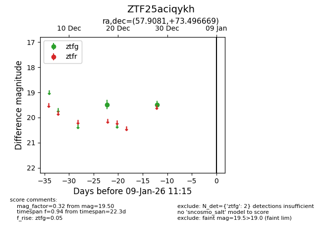
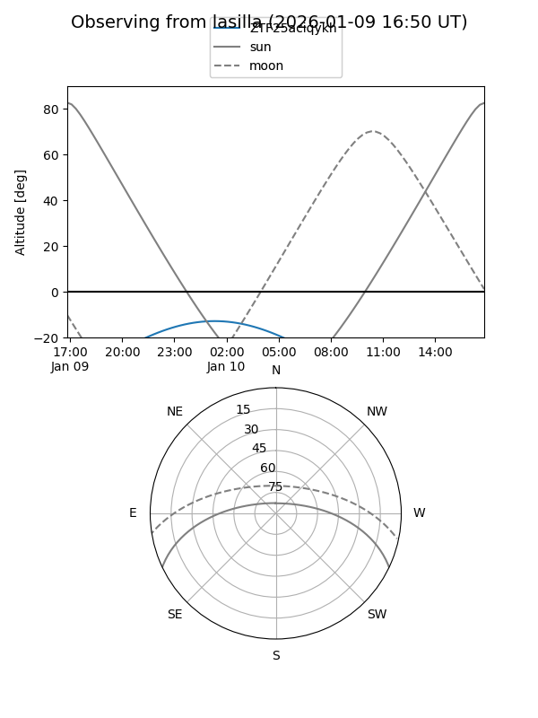
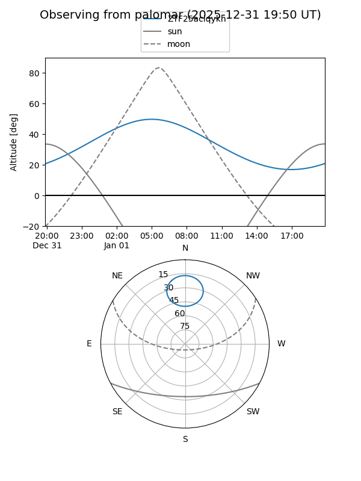

ZTF25aciqykh
Target ZTF25aciqykh at 2026-01-09 12:49
Aliases and brokers:
FINK: link
Lasair: link
ALeRCE: link
alt names
ZTF25aciqykh (ztf,fink_ztf)
Coordinates:
equatorial (ra, dec) = 57.9081,+73.49667
equatorial (HMS+DMS) = 03:51:37.94,+73:29:48.01
galactic (l, b) = (134.9440,+14.98581)
Flags:
Photometry:
last ztfg=19.50
2 ztfg detections
Lightcurve

Visibility


Additional plots